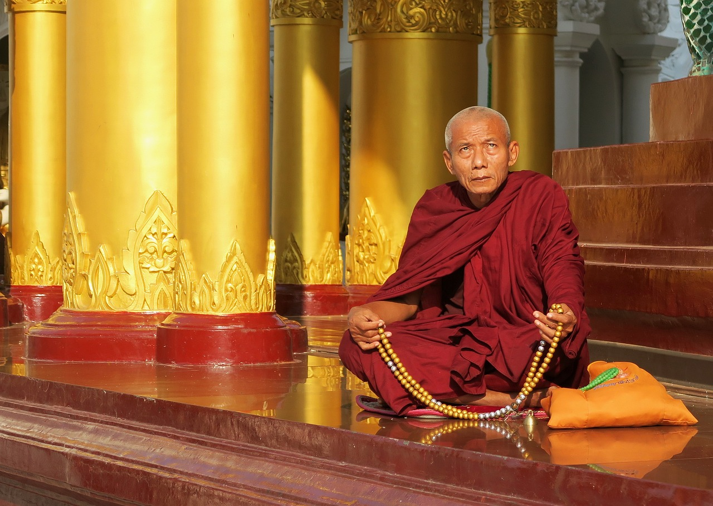

這句話太重要了！
淨界法師
念佛的人，他平常心中有一個歸依境，他能夠信、願、持名，心中有佛，有佛本願的攝受，所以在臨終的時候，佛陀以淨光照我、慈誓攝我，乃至於招感阿彌陀佛與諸聖眾現在其前，開示慰導，所以能夠無倒自在往生。
所以這個隨業跟隨念的確有差別。
我在讀佛學院的時候，我遇到二位老法師，他們往生我都在旁邊。一位老法師是參禪，這位參禪的老和尚，他是得到妙果老和尚的真傳，他參禪的功力很強。
他說他們早期在禪宗的時候，一天坐禪是十二個小時。當然參禪的意思不是只修禪定，在禪定當中要修我空觀、法空觀這個般若波羅蜜，參究什麼是你本來面目，所以你看他空性的智慧很強，他這個人生命很隨緣，生活也很淡薄。
後來他得到癌症，就面臨了臨命終，當然他也不念佛、他也不希望我們念佛。
他在臨命終的時候，身體上有病痛是可以理解，他本來是讓弟子們安排要坐著往生;但是坐了一段時間以後，實在不行，只好躺下來。躺下來的時候，我看他身體的相貌，有一點痛苦的相貌，那個眉頭有點皺皺的。
所以我們講，今生的修行，跟無始劫的業力相比，的確是有點麻煩，因為你一個參禪的人，平常沒有保持對名號的歸依，所以完全是隨業流轉。
另外一個老法師是念佛的，他是在參禪老和尚的第二年往生，我們也在旁邊幫他助念。
當然念佛人不同了，這個念佛的老和尚也是得癌症，他臨終的時候當然也有病痛，你看他臉上的表情就知道他身體有病痛;但是我們念佛人，臨終的時候要助念的，我們一助念的時候，誒，他的嘴巴也跟著我們念，就帶動他心中以前的歸依境。
念了一段時間以後，不可思議，他嘴巴跟我們這樣動動動，他的相貌本來是有點痛苦，慢慢慢慢變成安詳，而且臉色本來蒼白轉成紅潤。念了一段時間以後，他還手上動一動，告訴我們他要吉祥臥，就搬過來吉祥臥，再念一段時間，然後就在佛號當中安詳往生。
這二個老和尚的往生，我們都在旁邊看。當然如果從自力的角度，我認為這個參禪老和尚戒定慧的功德高過念佛的法師，因為我們平常都生活在一起;但是為什麼念佛的法師臨終的時候，能夠這樣的安詳呢?
因為他的生命當中，多了一個佛的力量在裡面──仗他力故，佛力不可思議。
我們這樣講好了，阿彌陀佛的心是平等，像太陽普遍照耀大地;但是佛陀要照耀你，不是單方面的，你心中對佛陀沒有歸依的心，你不憶念他，他怎麼跟你感應道交呢?
所以我們這樣講：這個念佛的老和尚在臨終的時候，之所以能夠跳過去，我認為佛的力量因素太大了，就是這個隨念往生。
所以這個地方，我們在臨終的時候，唯有信願持名，仗他力故。佛慈悲願，定不唐捐;彌陀聖眾，現前慰導。故得無倒，自在往生。
這句話太重要了。
佛見眾生，臨終倒亂之苦，特為保任此事─所以殷勤再勸發願 ─以願能導行故也
所以釋迦牟尼佛看到我們生死凡夫修行，平常的時候都修得不錯，臨終的時候遇到業力現前，大家都是顛倒散亂。
這怎麼辦呢?佛陀告訴我們：應當發願，生彼國土。
你一定要在你的生命當中設定目標，你才能夠產生隨念的力量。
這個地方講到正示行者執持名號以立行。
南無阿彌陀佛